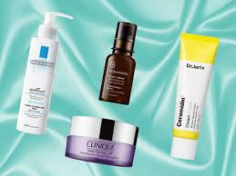
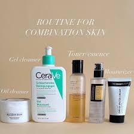

Do: Mix up your products
Combination skin deals with having an oily forehead, nose and chin T-zone and dry cheeks U-zone. Your skin needs different skincare products that target both the issues.
Don’t: Skip on moisturising
Oily skin and combination skin too needs hydration and skipping moisturising isn’t going to help. It will make your U-zone drier and tighter. Instead, use a moisturiser with a light formula.
Do: Exfoliate regularly
An oily T-zone invites blackheads, whiteheads and acne. Use a scrub twice a week to get the excess oil off and remove dead skin cells. We suggest St. Ives Energizing Coconut & Coffee Scrub.
Do: Keep changing your skincare routine
While everyone’s skin behaves differently according to changes in the season, combination skin starts acting up with even a mild change in the weather.
Use Heavy Products
In the same vein, avoid using heavy moisturizers all over your face. These products can clog your pores and leave your skin feeling even oilier. Lightweight, non-comedogenic formulas are ideal for allover use, and you can reserve stronger moisturizers for the driest parts of your face.
Skip Steps in Your Routine
You may be tempted to skip out on moisturizers to get rid of excess oils or toners to avoid irritating dry skin, but skimping on your skincare routine will only do you a disservice.
Go Overboard Trying to Control Oil
Greasy skin can feel uncomfortable, but using aggressive oil-controlling products won’t help. These products, usually alcohol-based, only dry out and irritate the skin. Worse, your skin will start producing even more oil to replace what’s been stripped away.
Superoxide Dismutase
Choose a gentle, soap-free cleanser for your combination skin. Cleansers that do not contain soap help to prevent inflammation and excessive dryness. Superoxide dismutase is a protective ingredient that helps the skin barrier to ward off free radicals and environmental stressors. It protects the skin from unnecessary damage, soothing it and evening out the complexion.
Hyaluronic Acid
This wonder hydrator is non-comedogenic – it hydrates without clogging pores, making it ideal for both acne-prone and oily skin and also dry, flaky skin. Combination skin can overcompensate and produce extra oil due to dehydration, so layering moisturising ingredients in your routine is key.
Peptides
Peptides are the building blocks for key proteins that the skin needs to stay supple and strong, like collagen and elastin. When used in skincare, they help to build up a stronger skin barrier. The skin barrier is the skin’s first defence against bacteria, UV rays.
Lactic Acid
Lactic acid is an alpha-hydroxy acid that works on all skin types and is particularly beneficial for combination skin. Because it is ultra-hydrating and a sensitive-skin hero, this ingredient will gently remove dead skin cells and impurities without causing irritation.
Cleanser: use a gentle hydrating cleanser.
Toner: apply an exfoliating product that contains alpha and/or beta hydroxy acids. This will regulate oil production, clean pores and also address wrinkles or dull skin.
Actives: Vitamin C can help stimulate collagen production and brighten skin. As such it is great if you have a dull complexion or skin that needs firming or has signs of sun damage. Niacinamide can also help reduce the appearance of pores and brighten the skin.
Moisturiser: use a light hydrating moisturiser. Use an oil-free product that contains hydrators like ceramides, polyglutamic acid and hyaluronic acid. If you are not using a separate active product, look for a moisturiser that contains Vitamin C and niacinamide.
Sunscreen: protect your skin from UV damage with an oil-free sunblock. Do so using a sunscreen with at least SPF 30.
Double Cleanser: start with a cleansing oil or cleansing balm to remove makeup and any pollutants. It will also keep your pores clean. Then finish by using your morning cleanser.
Actives: use a Retinol serum or if appropriate prescription retinoids like Adapalene or Tretinoin. Moisturise with a more emolliating moisturiser than what you used in the morning. This will lock-in moisture and protect your skin barrier. If you don’t want to use separate retinoid, try a hydrating night cream containing Retinol.

